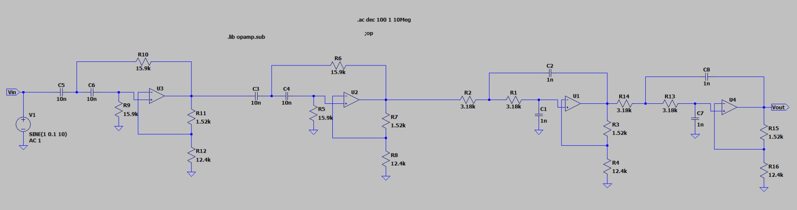
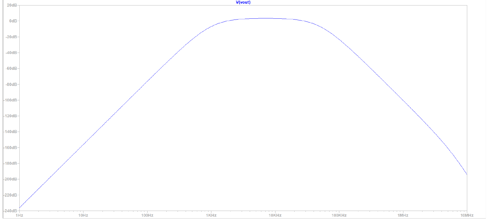
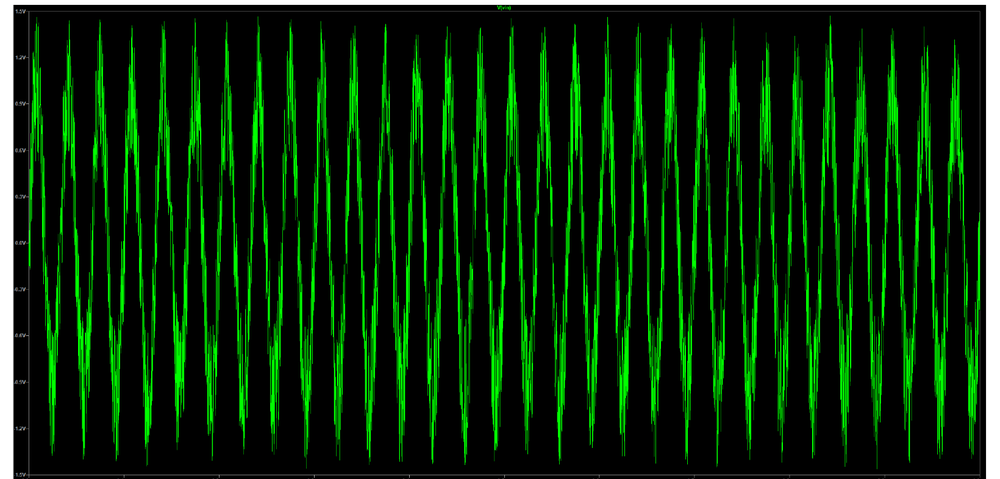
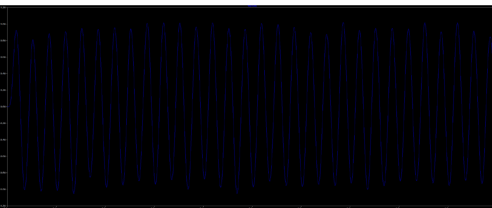

An 8th-order band-pass filter built by cascading a 4th-order high-pass and a 4th-order low-pass biquad section, giving a 1 kHz to 50 kHz passband with more than 45 dB of stopband attenuation.

| Stage | Components | Gain |
|---|---|---|
| High-pass (4th order) | \(R = 15.9\ \mathrm{k\Omega}\), \(C = 10\ \mathrm{nF}\) | \(K_1 = 1.152\) |
| Low-pass (4th order) | \(R = 3.18\ \mathrm{k\Omega}\), \(C = 1\ \mathrm{nF}\) | \(K_2 = 2.235\) |
Stability was checked by solving each biquad's pole locations analytically and confirming all poles lie in the left half s-plane, then validating with a transient step response that decayed without oscillation.
The design was verified in LTspice with AC analysis from 1 Hz to 10 MHz and transient simulation, recovering a clean 30 kHz tone from a white-noise-corrupted input.

Noise rejection test

